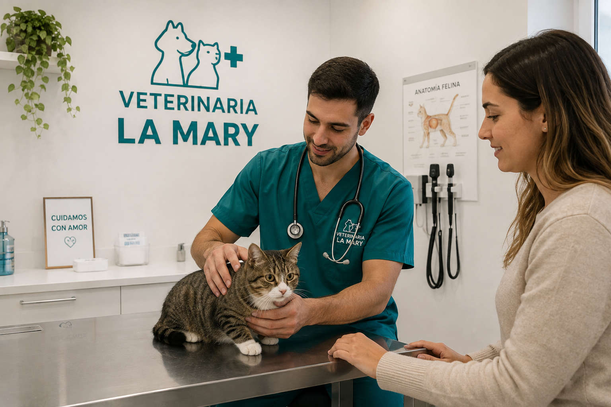
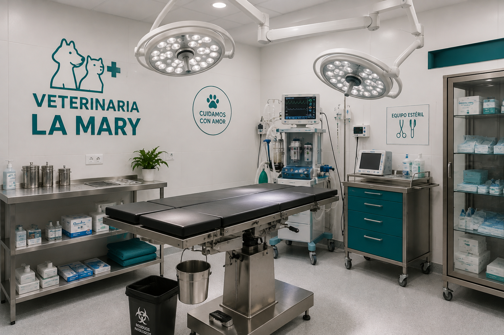
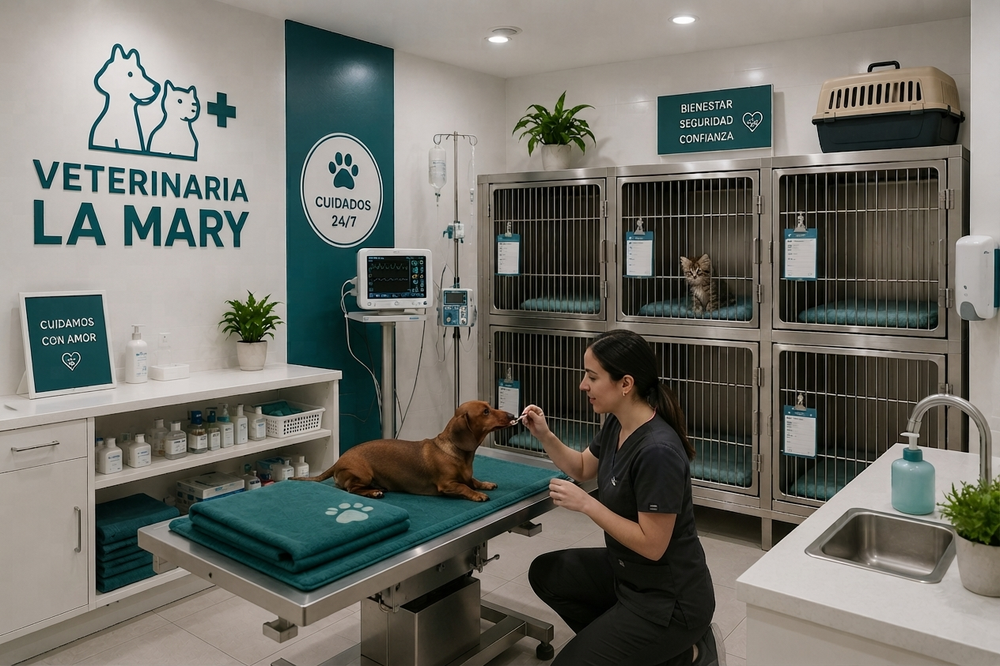

Consultas
Exámenes clínicos generales, diagnóstico temprano y seguimiento continuo para garantizar la salud y vitalidad de tu mascota en cada etapa.
Ofrecemos atención médica preventiva, diagnósticos precisos, cirugías y servicio de urgencias con el compromiso y la calidez que tu mascota merece.
Solicita un turnoExámenes clínicos generales, diagnóstico temprano y seguimiento continuo para garantizar la salud y vitalidad de tu mascota en cada etapa.
Cuidado y monitoreo médico continuo las 24 horas para pacientes en recuperación postquirúrgica o tratamientos intensivos.
Terapias físicas personalizadas para mejorar la movilidad, aliviar dolores crónicos y acelerar la recuperación postquirúrgica.
Personas comprometidas con el bienestar de cada paciente.

Clínica de pequeños animales
Especialista en prevención y atención clínica personalizada.

Cirugía y diagnóstico
Dedicado al diagnóstico, tratamiento y recuperación de mascotas.

Asistencia veterinaria
Acompaña a nuestros pacientes durante su atención y recuperación.